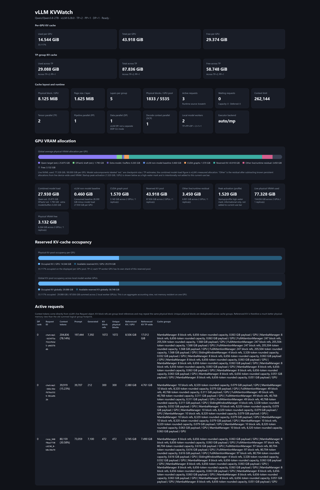

KV cache is the bottleneck
Stock metrics do not expose the physical block accounting operators need: how many blocks are allocated, how much of the pool is occupied, and which requests hold those blocks.
LLM Infrastructure · Observability · Python
Fleet-wide KV-cache observability for vLLM inference serving. KVWatch combines scheduler-level telemetry, a detailed per-node dashboard, an nvidia-smi-style fleet CLI, and a live Confluence status view for a three-node GPU fleet.
In active development. KVWatch is continuing to evolve, so this project page will be updated as telemetry, integrations, and validation work change.

A custom V1 AsyncScheduler plugin observes live inference state without forking vLLM.
Served in bf16 with prefix caching and DFlash2 speculative decoding.
Parallel collection provides one consistent operational view across the fleet.
Long-context serving makes accurate KV-cache accounting especially important.
The dashboard reports tensor, pipeline, data, and decode-context parallelism.
Immutable scheduler snapshots are exposed through a read-only HTTP endpoint.
Stock metrics do not expose the physical block accounting operators need: how many blocks are allocated, how much of the pool is occupied, and which requests hold those blocks.
A node can appear idle while retaining KV pressure, or look busy while still having substantial context capacity. Request counts alone do not describe the real serving constraint.
Checking every node separately made it difficult to compare health, load, throughput, data freshness, and queue pressure at a glance.
The per-node dashboard combines scheduler snapshots, live Prometheus metrics, vLLM startup-log data, and NVML. It surfaces per-GPU and tensor-parallel KV capacity, model and CUDA allocations, free VRAM, topology, active requests, context length, token counts, physical block references, and cache-group layout.
KVWatchScheduler subclasses vLLM's V1 AsyncScheduler through the supported plugin interface. It observes physical pools, hybrid cache groups, request context, token counters, and parallelism while delegating scheduling back to vLLM unchanged.
A lightweight web service fuses scheduler data, Prometheus, startup logs, and NVML into a detailed operational view of each serving node and GPU.
A zero-dependency Python CLI gathers nodes in parallel and renders status, requests, KV usage, topology, snapshot age, load, and generated tokens per second in one nvidia-smi-style table.
One background collector maintains a cached fleet snapshot for a live Confluence view. Any number of viewers can poll that cache without adding more traffic to the inference nodes.
KVStatus is the fleet-wide, at-a-glance layer of KVWatch. A single background
collector polls each node's KVWatch scheduler endpoint plus vLLM metrics and
health endpoints, then stores one cached fleet snapshot. The Confluence iframe
polls that local cache through /api/status, so opening the wiki page
does not create another round of requests against every inference server.
A long AGE does not automatically mean the values shown to operators are stale. When no requests are being scheduled, the scheduler snapshot may remain unchanged because no KV allocation has changed. KVStatus retains valid static layout data and reconciles dynamic usage, request, and load figures against live vLLM metrics. In this screenshot, the large AGE values indicate nodes without recent request activity, while the fleet table continues to show their current reconciled state.
Idle engines stop calling the scheduler, which can freeze the last snapshot. KVWatch detects stale data, preserves static layout facts, and replaces dynamic usage and request figures with live Prometheus gauges. The displayed age and source keep every number auditable.
Data-parallel ranks each require their own telemetry endpoint. Ports are reserved before any server binds, eliminating the race that otherwise causes concurrent rank processes to collide with EADDRINUSE errors.
The 0 to 100 load score uses the greater of KV pressure and request pressure. A waiting request raises the score to at least 90 because a queue is direct evidence that the scheduler cannot place work immediately.
vLLM exposes cumulative generated tokens rather than a tokens-per-second gauge. KVWatch differences that counter over measured time, carries a rolling baseline, and clamps counter resets to zero so restarts never create false spikes.
The observer samples serving state but never mutates it. Monitoring failures cannot alter scheduler decisions or block inference.
Nodes report ONLINE, PARTIAL, or OFFLINE. Composite scores are withheld when required inputs are missing instead of presenting misleading estimates.
If collection fails, the control-plane server keeps the previous snapshot visible and surfaces the error rather than allowing the dashboard to go blank.
A companion harness runs vLLM serving benchmarks while collecting GPU, NVLink, and remote fabric telemetry. Results are aggregated into an Excel report with throughput plus TTFT, TPOT, and ITL percentiles.
Mock HTTP servers reproduce the real KVWatch and Prometheus schemas, including changing counters. Tests cover health states, stale reconciliation, load-score boundaries, throughput calculations, and ANSI-safe terminal alignment.
KVWatch was built at Cerio for internal GPU infrastructure observability. This portfolio page describes the system architecture and engineering work without exposing private deployment details or operational credentials.